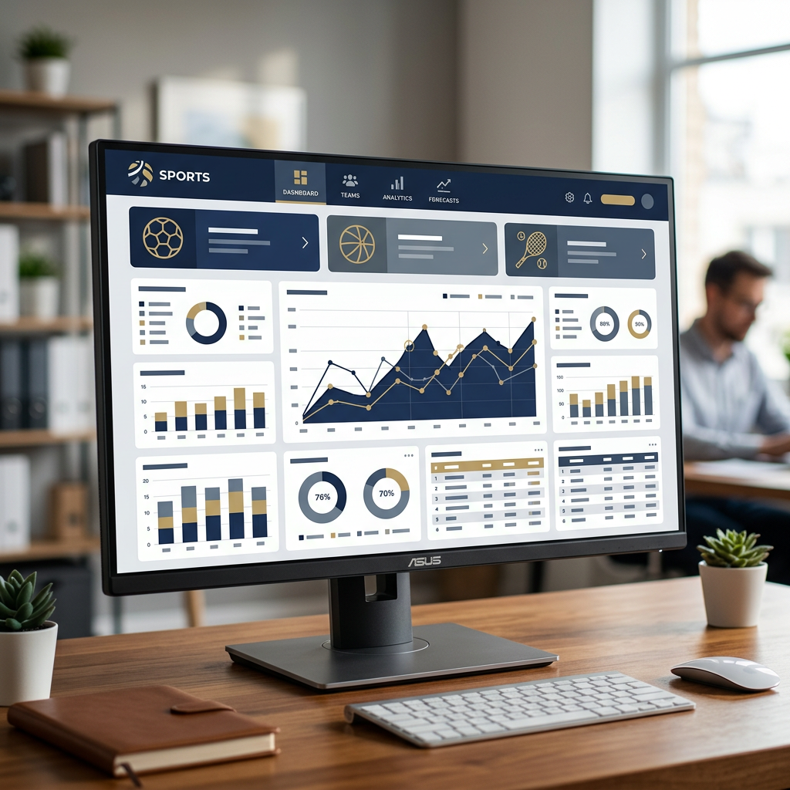

Aspettare giorni o addirittura settimane per ricevere le proprie vincite è una frustrazione comune per molti giocatori italiani. I tradizionali casinò regolamentati dall'ADM (ex AAMS) spesso applicano procedure di verifica lunghe e tempi di elaborazione che rallentano significativamente i pagamenti. Per chi cerca un'esperienza più rapida ed efficiente, i casino non aams con prelievo immediato rappresentano un'alternativa concreta, capace di accreditare le vincite sul conto del giocatore in pochi minuti o al massimo qualche ora. Questa guida completa esplora come funzionano questi casinò non aams che pagano subito, quali metodi di pagamento garantiscono la massima velocità, e come scegliere piattaforme sicure e affidabili per la propria esperienza di gioco.

Cosa sono i casino non AAMS con prelievo immediato?
I casino non AAMS sono piattaforme di gioco online che operano con licenze internazionali rilasciate da autorità come la Malta Gaming Authority (MGA), Curacao eGaming, o altre giurisdizioni riconosciute a livello globale. Il termine "non AAMS" indica semplicemente che questi siti non possiedono la licenza ADM italiana, ma seguono comunque standard regolatori rigorosi stabiliti dalle autorità che li hanno certificati.
È fondamentale chiarire un equivoco comune: "non AAMS" non significa "non sicuro" o "illegale". Questi casinò seguono normative diverse che spesso permettono maggiore flessibilità operativa, tra cui procedure di pagamento più snelle, limiti di prelievo più alti e una gamma più ampia di metodi di pagamento, incluse le criptovalute. Quando parliamo di "prelievo immediato", ci riferiamo a due aspetti distinti ma complementari:
- Elaborazione interna: il tempo che il casinò impiega per approvare la richiesta di prelievo (da pochi minuti a qualche ora nei migliori casi)
- Trasferimento effettivo: il tempo necessario al metodo di pagamento scelto per accreditare i fondi sul conto del giocatore (variabile in base al provider)
I migliori siti con prelievo immediato ottimizzano entrambe queste fasi, garantendo che dalla richiesta all'accredito passino davvero pochi minuti, specialmente quando si utilizzano metodi veloci come criptovalute o portafogli elettronici.
Come valutiamo i siti con prelievo immediato
La selezione di un casinò affidabile con prelievi rapidi richiede un'analisi approfondita di diversi fattori chiave. Non basta leggere le promesse pubblicitarie: è necessario verificare l'esperienza reale degli utenti e testare personalmente i servizi. Ecco i criteri fondamentali che utilizziamo per valutare questi operatori:
Tempi di prelievo reali
La differenza tra i tempi pubblicizzati e quelli effettivi può essere significativa. Analizziamo recensioni verificate, forum di settore e conduciamo test diretti per misurare quanto tempo intercorre realmente tra la richiesta e l'accredito. I migliori casinò elaborano le richieste in meno di 15 minuti durante gli orari di punta.
Limiti di transazione
Un casinò con prelievi immediati ma limiti giornalieri troppo bassi (ad esempio 500€ al giorno) non è realmente utile per chi vince somme consistenti. Verifichiamo che i limiti minimi di prelievo siano accessibili (generalmente 10-20€) e che i massimi permettano transazioni significative senza frazionamenti.

Struttura delle commissioni
I migliori operatori non applicano commissioni sui prelievi, specialmente se si utilizzano metodi digitali. Alcuni potrebbero addebitare piccole fee per bonifici bancari o carte di credito, ma questi costi devono essere trasparenti e comunicati chiaramente prima della transazione.
Standard di sicurezza
La velocità non deve mai compromettere la sicurezza. Verifichiamo che ogni piattaforma utilizzi crittografia SSL a 256 bit, che i dati sensibili siano protetti secondo gli standard PCI-DSS e che la licenza di gioco sia valida e verificabile attraverso il sito dell'autorità regolatrice.
Qualità dell'assistenza clienti
Un supporto disponibile 24 ore su 24, 7 giorni su 7, tramite chat dal vivo è essenziale. Quando un prelievo incontra un problema tecnico o richiede una verifica aggiuntiva, la capacità del team di assistenza di risolvere rapidamente la questione fa la differenza tra un'esperienza positiva e una frustrante.
Metodi di pagamento per prelievi veloci nei casinò non AAMS
La scelta del metodo di pagamento è il fattore più determinante per ottenere prelievi veramente immediati. Non tutti i sistemi sono uguali: alcuni garantiscono transazioni istantanee, mentre altri richiedono giorni di elaborazione. Ecco una panoramica dettagliata delle opzioni disponibili.
Criptovalute: la velocità massima
Le criptovalute rappresentano attualmente il metodo più rapido per prelevare vincite dai casino che pagano subito. Bitcoin, Ethereum, Litecoin e stablecoin come USDT o USDC permettono trasferimenti che si completano generalmente in 5-30 minuti, indipendentemente dall'importo o dall'orario.
I vantaggi delle crypto includono:
- Elaborazione quasi istantanea 24/7, anche nei weekend e festivi
- Nessun intermediario bancario che possa rallentare o bloccare la transazione
- Commissioni generalmente basse o nulle (dipendono dalla congestione della blockchain)
- Limiti di prelievo molto alti o inesistenti
- Privacy superiore rispetto ai metodi tradizionali
L'unico requisito è possedere un wallet digitale (Coinbase, Binance, Ledger, ecc.) per ricevere i fondi. Una volta appresa la procedura, questo metodo diventa la scelta prediletta per chi cerca velocità assoluta.
Portafogli elettronici (E-Wallets)
Skrill, Neteller, MuchBetter e Jeton sono soluzioni intermedie che combinano velocità e facilità d'uso. Una volta che il casinò approva il prelievo, i fondi vengono accreditati sul portafoglio elettronico in tempo reale o entro pochi minuti.
Questi servizi offrono:
- Trasferimenti istantanei o in poche ore massimo
- Interfacce user-friendly, ideali per chi non ha familiarità con le crypto
- Possibilità di collegare carte di debito per prelevare poi contanti agli ATM
- Buona diffusione tra i casinò internazionali
Lo svantaggio principale è che alcuni e-wallet applicano commissioni per trasferire i fondi dal portafoglio al conto bancario, e potrebbero esserci costi di conversione se si gioca in una valuta diversa dall'euro.
Instant Banking e Open Banking
Servizi come Trustly, Zimpler o Brite permettono trasferimenti diretti dal casinò al conto bancario del giocatore, bypassando i lunghi tempi dei bonifici tradizionali. Questi sistemi utilizzano protocolli di Open Banking che connettono in modo sicuro le banche al casinò.
I prelievi tramite questi metodi possono completarsi in 1-24 ore, un compromesso ragionevole per chi preferisce ricevere i fondi direttamente sul conto corrente senza passaggi intermedi.
Metodi da evitare per la velocità
Se la priorità è ricevere le vincite rapidamente, è meglio evitare:
- Bonifico bancario (bonifico SEPA): richiede tipicamente 1-5 giorni lavorativi
- Carte di credito/debito (Visa, Mastercard): i tempi variano da 1 a 7 giorni lavorativi
- Assegni: praticamente obsoleti nel gioco online, richiedono settimane
Questi metodi possono essere utili per depositi, ma sono decisamente inadeguati quando si cerca un'esperienza di prelievo immediato.
L'importanza del KYC per i pagamenti rapidi
Anche nei siti casino non aams più veloci, il processo di verifica dell'identità (Know Your Customer - KYC) è obbligatorio per legge. Questo requisito deriva dalle normative antiriciclaggio internazionali e serve a proteggere sia il casinò che i giocatori da frodi e attività illecite.
Il segreto per ottenere prelievi veramente immediati è completare la verifica del conto prima di richiedere il primo prelievo. La maggior parte dei casinò permette di depositare e giocare senza verifica iniziale, ma blocca i prelievi finché l'account non è stato completamente validato.
Documenti richiesti per la verifica
Il processo KYC standard richiede generalmente tre categorie di documenti:
- Prova d'identità: carta d'identità, patente di guida o passaporto in corso di validità
- Prova di residenza: bolletta di utenza (luce, gas, telefono), estratto conto bancario o documento fiscale emesso negli ultimi 3 mesi
- Prova del metodo di pagamento: foto della carta di credito (con parte centrale coperta per sicurezza) o screenshot del wallet elettronico
La documentazione va caricata nell'area personale del sito tramite scanner o foto chiare e leggibili. I casinò più efficienti elaborano le verifiche in 24-48 ore, mentre alcuni offrono approvazione in poche ore durante l'orario lavorativo.

Strategia per prelievi istantanei
Per massimizzare la velocità, segui questa sequenza:
- Registra l'account e completa il profilo con informazioni accurate
- Carica immediatamente tutta la documentazione KYC, anche prima di depositare
- Attendi la conferma di verifica (riceverai un'email)
- Solo a questo punto, effettua il deposito e gioca
- Quando richiedi il prelievo, l'elaborazione sarà immediata perché l'account è già verificato
Questa procedura proattiva elimina il principale collo di bottiglia che rallenta i pagamenti nei casinò online.
Vantaggi e svantaggi dei casino senza AAMS
Come ogni scelta, anche optare per piattaforme internazionali comporta aspetti positivi e negativi che è importante valutare prima di registrarsi.
Vantaggi principali
| Aspetto | Casino Non AAMS | Casino ADM |
|---|---|---|
| Tempi di prelievo | Immediati (minuti/ore) | 2-7 giorni lavorativi |
| Limiti di puntata | Flessibili o assenti | Limitati per legge |
| Bonus e promozioni | Più generosi (fino al 200-300%) | Limitati dalla normativa italiana |
| Metodi di pagamento | Ampia scelta (crypto incluse) | Limitati ai sistemi tradizionali |
| Catalogo giochi | Più vasto e aggiornato | Limitato ai provider autorizzati ADM |
| Autoesclusione | Non collegata al sistema nazionale | Collegata al registro ADM |
I casinò internazionali offrono una libertà operativa maggiore, con bonus più sostanziosi e una varietà di giochi superiore. L'assenza di restrizioni sui limiti di puntata attira particolarmente i giocatori high roller.
Svantaggi da considerare
- Assenza di tutela ADM: in caso di controversie, non si può ricorrere all'autorità italiana, ma solo a quella della licenza del casinò
- Responsabilità individuale: non essendo collegati al sistema di autoesclusione nazionale, spetta al giocatore gestire autonomamente i propri limiti
- Possibili costi di conversione: se il casinò opera in valute diverse dall'euro, potrebbero applicarsi commissioni di cambio
- Varietà di standard: le licenze internazionali hanno requisiti diversi; è necessario scegliere solo quelle più rigorose
La valutazione di questi fattori dipende dalle priorità personali. Chi cerca velocità, varietà e bonus generosi troverà i casino senza aams più adatti alle proprie esigenze, mentre chi preferisce la tutela normativa italiana potrebbe optare per piattaforme ADM nonostante i tempi più lunghi.
Sicurezza e legalità: è sicuro giocare qui?
Una delle domande più frequenti riguarda la sicurezza e la legalità dei casinò non AAMS. È fondamentale fare chiarezza su entrambi gli aspetti per prendere decisioni informate.

La questione della legalità
Dal punto di vista legale italiano, giocare su piattaforme non autorizzate ADM si colloca in una zona grigia. La legge italiana vieta l'offerta di gioco senza licenza ADM sul territorio nazionale, ma non prevede sanzioni specifiche per i giocatori che utilizzano siti esteri. Le eventuali conseguenze ricadono sugli operatori non autorizzati, non sui singoli utenti.
Tuttavia, è importante comprendere che scegliendo un casinò non ADM, si rinuncia alle tutele specifiche previste dalla normativa italiana, come l'accesso al Fondo per il Gioco Responsabile o la mediazione dell'autorità nazionale in caso di dispute.
Come verificare la sicurezza
Un casinò non AAMS può essere perfettamente sicuro se possiede una licenza valida da un'autorità regolatrice seria. Le più affidabili includono:
- Malta Gaming Authority (MGA): standard molto elevati, controlli rigorosi, considerata tra le migliori al mondo
- Curacao eGaming: più permissiva ma comunque regolamentata, molto diffusa tra i casinò crypto
- UK Gambling Commission: estremamente rigorosa, tra le più rispettate (anche se post-Brexit accetta meno giocatori EU)
- Kahnawake Gaming Commission: storica autorità canadese con buona reputazione
Per verificare l'autenticità della licenza:
- Controlla il footer del sito del casinò, dove deve essere indicato il numero di licenza
- Visita il sito web dell'autorità regolatrice corrispondente
- Cerca il numero di licenza nel registro pubblico degli operatori autorizzati
- Verifica che il nome dell'operatore corrisponda e che la licenza sia attiva
Altri indicatori di affidabilità
Oltre alla licenza, altri segnali indicano un casinò sicuro:
- Presenza di certificati di gioco equo da laboratori indipendenti (eCOGRA, iTech Labs, GLI)
- Utilizzo di software di gioco da provider rinomati (NetEnt, Microgaming, Evolution Gaming)
- Politica sulla privacy chiara e conforme al GDPR
- Recensioni positive su portali indipendenti e forum di settore
- Trasparenza nei termini e condizioni, specialmente riguardo bonus e prelievi
- Strumenti di gioco responsabile (limiti di deposito, autoesclusione, test di autodiagnosi)
Un operatore serio investe in queste certificazioni e le mostra con orgoglio sul proprio sito, perché rappresentano garanzie concrete per i giocatori.
Confronto tra casino AAMS e non AAMS: tabella comparativa
| Caratteristica | Casino ADM (AAMS) | Casino Non AAMS |
|---|---|---|
| Licenza | ADM (Agenzia Dogane Monopoli) | MGA, Curacao, altre internazionali |
| Tempi prelievo medi | 2-7 giorni lavorativi | Pochi minuti - 24 ore |
| Bonus benvenuto tipico | 50-100% fino a 500€ | 100-300% fino a 2000€+ |
| Metodi pagamento | Limitati (carte, bonifici, PayPal) | Ampi (incluse crypto) |
| Limiti di puntata | Imposti dalla legge italiana | Flessibili o assenti |
| Numero di giochi | Limitato ai provider ADM | Molto vasto |
| Tassazione vincite | Prelievo alla fonte del 25% (jackpot) | Dipende dalla giurisdizione |
| Supporto in italiano | Sempre disponibile | Spesso disponibile |
| Tutela legale | ADM e autorità italiane | Autorità della licenza estera |
| Registro autoesclusione | Centralizzato nazionale | Singolo per ogni operatore |
Consigli pratici per prelievi più veloci
Oltre alla scelta del casinò e del metodo di pagamento, esistono strategie pratiche per ottimizzare ulteriormente i tempi di prelievo e ridurre eventuali intoppi.
Completa la verifica in anticipo
Come già menzionato, questo è il singolo fattore più importante. Non aspettare di avere vincite da prelevare per iniziare la procedura KYC. Carica i documenti subito dopo la registrazione e attendi l'approvazione prima di depositare.
Preleva con lo stesso metodo del deposito
Molti casinò richiedono per policy (e normative antiriciclaggio) che il primo prelievo avvenga con lo stesso metodo usato per il deposito. Se hai depositato con carta di credito, il primo prelievo dovrà andare sulla stessa carta. Solo successivamente potrai utilizzare metodi alternativi più veloci come crypto o e-wallet.
Rispetta i requisiti di scommessa dei bonus
Se hai accettato un bonus di benvenuto, assicurati di aver soddisfatto completamente i requisiti di puntata (wagering) prima di richiedere il prelievo. Tentare di prelevare con bonus attivi o parzialmente giocati causerà il rifiuto della richiesta e il possibile annullamento del bonus stesso.
Scegli orari strategici
Anche se i migliori casinò elaborano prelievi 24/7, le richieste inviate durante l'orario lavorativo europeo (9:00-18:00 CET) tendono a essere processate più rapidamente grazie alla piena operatività dei team di supporto e finanziari.
Mantieni limiti ragionevoli
Prelievi di importi molto elevati (diverse migliaia di euro) possono attivare controlli aggiuntivi per sicurezza. Se hai vinto una somma consistente, considera di suddividerla in più prelievi di importo inferiore, rispettando comunque i limiti giornalieri del casinò.
Conserva la documentazione
Mantieni screenshot o email di conferma per ogni transazione. In caso di problemi, avere evidenza della richiesta di prelievo, dell'orario e dell'importo facilita notevolmente la risoluzione tramite assistenza clienti.
Errori comuni da evitare
Anche i giocatori esperti possono commettere errori che rallentano i prelievi o creano problemi evitabili. Ecco i più frequenti:
- Fornire dati incoerenti: nome, indirizzo e data di nascita devono corrispondere esattamente a quelli sui documenti d'identità
- Utilizzare documenti scaduti: tutti i documenti caricati devono essere in corso di validità
- Foto illeggibili: immagini sfocate, tagliate o con riflessi rendono impossibile la verifica e richiedono nuovo invio
- Creare account multipli: è severamente vietato e porta al blocco permanente di tutti gli account e delle vincite
- Usare metodi di pagamento intestati ad altri: carte, conti bancari e wallet devono essere sempre intestati al titolare dell'account di gioco
- Ignorare le comunicazioni del casinò: se il supporto richiede documentazione aggiuntiva, fornirla tempestivamente evita ritardi
Il futuro dei pagamenti nei casinò online
L'industria del gioco online continua a evolversi rapidamente, e i sistemi di pagamento non fanno eccezione. Le tendenze emergenti che plasmeranno il futuro dei prelievi includono:
Adozione crescente delle criptovalute
Bitcoin ed Ethereum sono solo l'inizio. Nuove blockchain più veloci ed efficienti (come Polygon, Solana o stablecoin su reti layer-2) stanno riducendo ulteriormente tempi e costi di transazione, rendendo le crypto sempre più accessibili anche ai non esperti.
Verifica istantanea tramite IA
Sistemi di intelligenza artificiale e riconoscimento biometrico stanno velocizzando il processo KYC, permettendo verifiche in tempo reale durante la registrazione invece che richiedere giorni di attesa.
Integrazione Open Banking
La direttiva europea PSD2 ha aperto la strada a connessioni dirette e sicure tra casinò e banche dei giocatori, eliminando intermediari e accelerando bonifici che tradizionalmente richiedevano giorni.
Wallet dedicati per il gaming
Stanno emergendo soluzioni di pagamento specifiche per il settore del gioco online, che combinano la velocità delle crypto con l'usabilità dei portafogli elettronici tradizionali.
Conclusioni
I casino non aams con prelievo immediato rappresentano una soluzione concreta per i giocatori italiani che non vogliono più attendere giorni per ricevere le proprie vincite. La combinazione di licenze internazionali affidabili, metodi di pagamento moderni come criptovalute e portafogli elettronici, e procedure operative snelle permette di accreditare i fondi in pochi minuti dall'approvazione della richiesta.
Il segreto per massimizzare questa velocità risiede in tre azioni fondamentali: completare la verifica del conto prima di giocare, scegliere metodi di pagamento istantanei come crypto o e-wallet, e selezionare casinò con comprovata reputazione di pagamenti rapidi e assistenza efficiente. La tabella comparativa presentata in questa guida evidenzia le differenze sostanziali tra i tradizionali casinò ADM e le alternative internazionali, permettendo una scelta consapevole basata sulle proprie priorità.
Mentre i casinò non AAMS offrono indiscutibili vantaggi in termini di velocità, bonus e varietà di giochi, è importante ricordare che la responsabilità di una scelta informata e di un gioco consapevole ricade sempre sul giocatore. Verificare sempre la validità della licenza, leggere attentamente termini e condizioni, e utilizzare gli strumenti di gioco responsabile disponibili sono pratiche essenziali per un'esperienza di gioco positiva e sicura. Con le informazioni e gli strumenti giusti, ricevere le proprie vincite in tempo reale non è più un'utopia, ma una realtà accessibile per chi sa dove cercare.